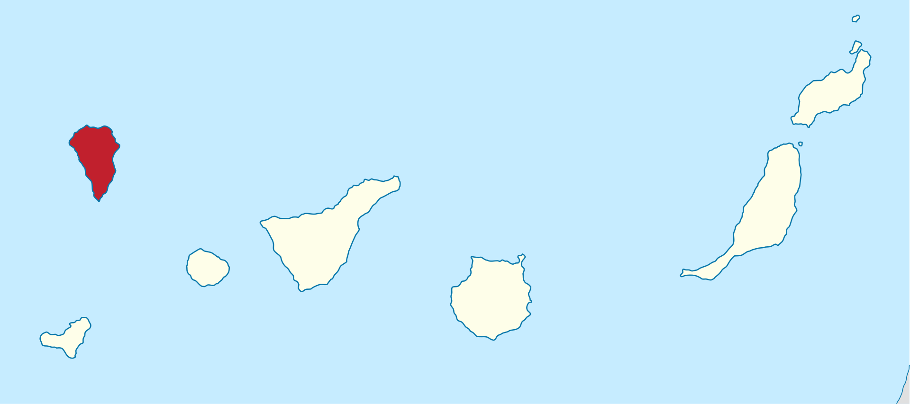

![]()

La Palma Earthquakes
Abstract
In September 2021, a significant jump in seismic activity on the island of La Palma (Canary Islands, Spain) signaled the start of a volcanic crisis that still continues at the time of writing. Earthquake data is continually collected and published by the Instituto Geográphico Nacional (IGN). …
Keywords
La Palma, Earthquakes
Based on data up to and including 1971, eruptions on La Palma happen every 79.8 years on average.
Studies of the magma systems feeding the volcano, such as (Marrero et al. 2019), have proposed that there are two main magma reservoirs feeding the Cumbre Vieja volcano; one in the mantle (30-40km depth) which charges and in turn feeds a shallower crustal reservoir (10-20km depth).
Eight eruptions have been recorded since the late 1400s (Figure 1).
Data and methods are discussed in Section 1.
Let \(x\) denote the number of eruptions in a year. Then, \(x\) can be modeled by a Poisson distribution
\[ p(x) = \frac{e^{-\lambda} \lambda^{x}}{x !} \tag{1}\]
where \(\lambda\) is the rate of eruptions per year. Using Equation 1, the probability of an eruption in the next \(t\) years can be calculated.
| Name | Year |
|---|---|
| Current | 2021 |
| Teneguía | 1971 |
| Nambroque | 1949 |
| El Charco | 1712 |
| Volcán San Antonio | 1677 |
| Volcán San Martin | 1646 |
| Tajuya near El Paso | 1585 |
| Montaña Quemada | 1492 |
Table 1 summarizes the eruptions recorded since the colonization of the islands by Europeans in the late 1400s.

La Palma is one of the west most islands in the Volcanic Archipelago of the Canary Islands (Figure 2).
Table 2 show the yearly number of earthquakes on La Palma.

Figure 3 shows the locations of recent earthquakes on La Palma.
1 Data & Methods
References
Marrero, José M., Alicia García, Manuel Berrocoso, Ángeles Llinares, Antonio Rodríguez-Losada, and Ramón Ortiz. 2019. “Strategies for the Development of Volcanic Hazard Maps in Monogenetic Volcanic Fields: The Example of La Palma (Canary Islands).” Journal of Applied Volcanology 8 (1). https://doi.org/10.1186/s13617-019-0085-5.